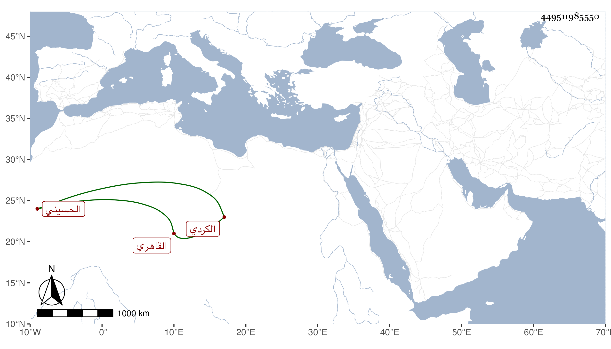

0902Sakhawi.DawLamic.ITO20230111-ara1.EIS1600.449511985550
Biography ID: 449511985550
187
عبد الله بن محمد بن خليل بن بكتوت بن بيرم بن بكتوت الكردي الأصل القاهري الحسيني والد الشمس بن بيرم الحنبلي ، قال لي أنه ولد في رمضان سنة ثمان وسبعين وسبعمائة وأنه حفظ القرآن وبعض القدوري وأنه ألم بالفرائض وأنه تزوج ابنة أخت ابن الظريف أمين الحكم واستولدها ابنته الموجودة الآن وأنه مات سنة ست وستين .
